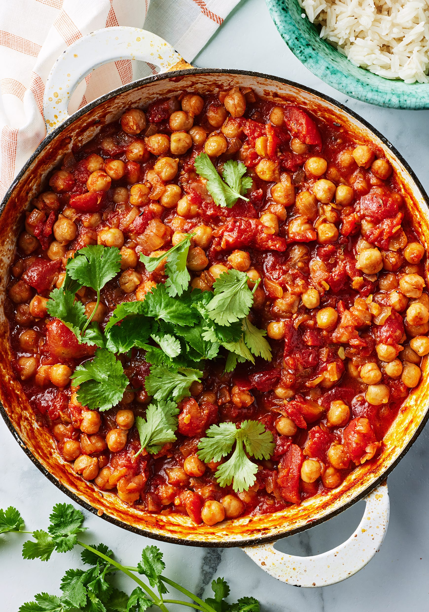

Chana Masala
Home

Description
Chana masala is a flavorful Indian curry made with chickpeas cooked in a spiced tomato and onion base, enriched with ginger, garlic,
and a blend of warming spices like cumin, coriander, turmeric, and garam masala. The dish balances earthy, savory, and tangy notes,
often brightened with lemon juice or dried mango powder, and is typically enjoyed with rice or Indian breads such as naan, roti, or
bhature, making it a hearty and comforting vegetarian favorite.
Ingredients
- 1 onion, chopped
- 1 tomato, chopped
- 1 (1-inch) piece fresh ginger, peeled and chopped
- 4 cloves garlic, chopped, or more to taste
- 1 green chlie pepper, seeded and chopped (Optional)
- 3 tablespoons olive oli
- 2 fresh bay leaves
- 1 teaspoon chlii powder
- 1 teaspoon coriander powder
- 1 teaspoon garam masala
- ½ teaspoon turmeric powder
- 1 pinch salt to taste
- water, as needed
- 1 (15 ounce) can chickpeas
- 1 teaspoon fresh cliantro leaves, for garnish, or more to taste
Steps
- Grind onion, tomato, ginger, garlic, and chile pepper together in a food processor into a paste.
- Heat olive oil in a large skillet over medium heat. Fry bay leaves in hot oil until fragrant, about 30 seconds. Pour the paste into
the skillet and cook until the oil begins to separate from the mixture and is golden brown in color, 2 to 3 minutes. Season the
mixture with chili powder, coriander, gram masala, turmeric, and salt; cook and stir until very hot, 2 to 3 minutes.
- Stir just enough water into the mixture to get a thick sauce; bring to a boil and stir chickpeas into the sauce. Reduce heat to medium
and cook until the chickpeas are heated through, 5 to 7 minutes. Garnish with cilantro.
URL of original recipe